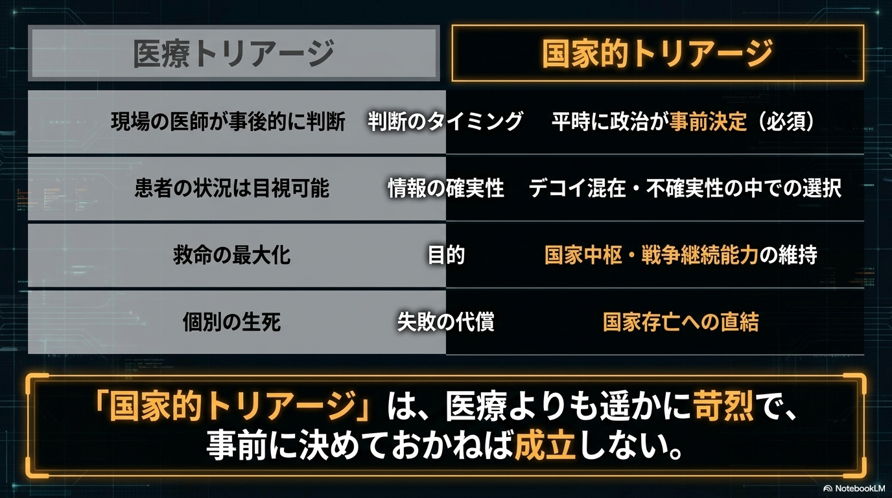
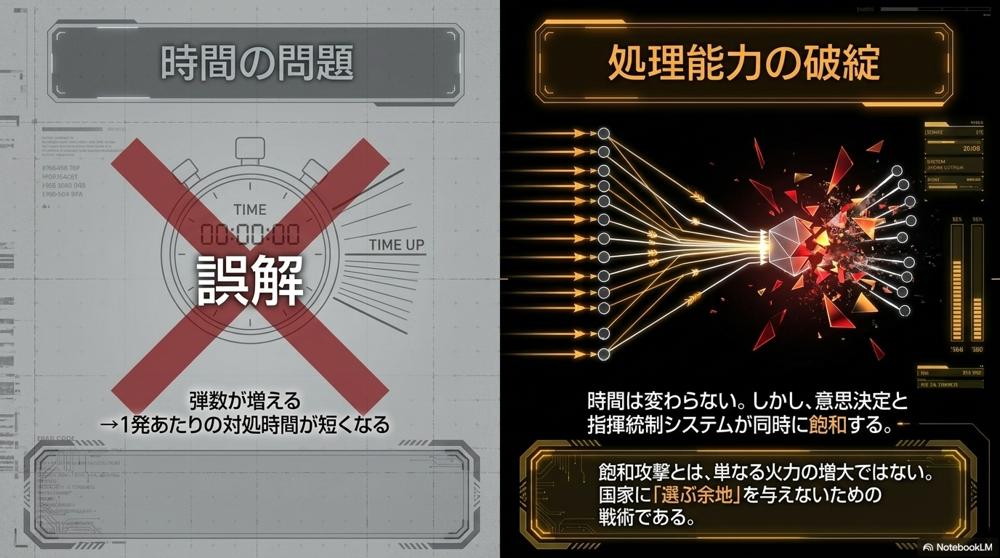
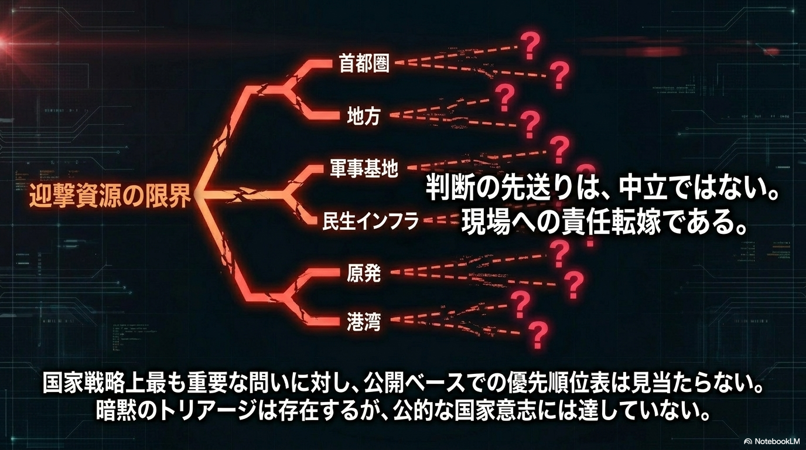

救急の現場でトリアージが成立する唯一の条件は、「全員は救えない」という事実を医師が直視していることだ。逆説的に聞こえるが、この冷徹な前提こそが、限られた資源で最大数の命を守ることを可能にする。トリアージを拒否した医師は、善意によって全員を失う。医療の世界では、この論理はすでに常識だ。
これと同じ問いが今、日本の安全保障に突きつけられている。
令和7年版防衛白書は、こう明記した。「既存のミサイル防衛網だけで完全に対応することは難しくなりつつある」。この一文は、政府が「全ては守れない」と公式に認めたことを意味する。だが国会の安保論議は今なお、「反撃能力を持つべきか」「専守防衛の範囲内か」という問いを繰り返す。守れないという現実を前提にした次の問い——「では何を優先して守るのか」——は、まだ俎上に載っていない。

まず、飽和攻撃の本質について一つの誤解を解いておく必要がある。「弾数が増えれば、一発あたりの対処時間が短くなる」という理解は、半分だけ正しく、本質を外している。着弾までの時間は変わらない。問題は、百発が同時に飛んでくるとき、三つの層が同時に崩壊することだ。
第一はセンサーの飽和。レーダーには同時追尾数に上限がある。本物のミサイルにデコイや変則軌道が混在すれば、「何が本物か判断できない」状態に陥る。第二は迎撃能力の飽和。PAC-3にもSM-3にも、弾数と発射機数に物理的な限界がある。迎撃ミサイル一発のコストは攻撃ミサイルの2〜3倍だ。百発に百発で応じる算数は、最初から成立しない。第三は、指揮・政治判断の崩壊。どこを守るかの優先順位付け、迎撃か被害受容かの選択——この意思決定が着弾1分前に求められる現実に、「まず国会で議論してから」という前提は機能しない。
飽和攻撃の本質は「時間が足りない」ではなく、「選択できない状況に追い込む」ことだ。国家に「守るものを選ぶ余地」を与えないための戦術である。

日本政府が何もしていないわけではない。それは公平に見なければならない。
統合防空ミサイル防衛（IAMD）の構築、反撃能力の保有、統合作戦司令部の新設と在日米軍との指揮統制統合——技術・運用面の前進は着実に起きている。自衛隊法に基づく破壊措置命令の事前発令（プレ・オーソライズ）により、総理の個別承認を待たずに迎撃できる体制も整った。イージス・システム搭載艦の整備、PAC-3の分散配置、弾薬備蓄の拡充も進んでいる。脅威認識は現実に追いついており、能力整備はその方向に動いている。
だが、根本的な問いへの答えは、公式には存在しない。
首都圏と地方のどちらを優先するか。軍事拠点と民生インフラのどちらに迎撃弾を向けるか。原発と市街地、どちらを先に守るか。こうした政治的優先順位を明示した文書は、防衛省のどこにも公開されていない。国会答弁も防衛白書も「全弾防護は困難」と認めながら、「では何を優先するか」の問いには答えない。政治的に極めてセンシティブだからだ、という説明は理解できる。だがその沈黙が、別の問題を生んでいる。
現実には、誰かがこの選択をしている。JADGEと呼ばれる自動警戒管制システムが脅威度に応じて目標を選別し、自衛隊の運用ルールが事実上のトリアージを行っている。政治が沈黙している間、現場が判断している。これは政府の怠慢ではなく、制度設計の空白だ。

保守の論理でいえば、語らないことも政治的決断である。
政府が国民にこの現実を語らない理由として、二つが挙げられる。一つは政治的コスト——「守れないものがある」と言えば批判を浴びる。もう一つは安全保障上の必要——具体的な防護対象を公表すれば、敵に弱点を教えることになる。
後者は正当な論理だ。しかし保守の知恵はここで止まらない。「原則は語り、運用は秘匿する」という峻別だ。「全ては守れない」「優先順位が存在する」という原則は語れる。どの都市がA層でどの施設がC層かは語らなくていい。民主主義国家が安全保障の現実と国民の信頼の間で折り合いをつける知恵は、「何も言わない」ことではなく、「どの水準まで語るか」を設計することにある。
問題は、この峻別すら実行されていないことだ。「語れること」と「語ってはいけないこと」の仕分けを、政府は公式にしていない。その結果、語れることまで語られていない。
「全弾防護は不可能」と国家として公言すること。重要防護対象の優先順位が存在するという事実を原則として明示すること。そして、その判断が現場の裁量ではなく政治の責任で下されると明確にすること——これは弱さの表明ではない。抑止力の強化だ。
敵は、日本が何を守ろうとしているかを計算して動く。優先順位が見えない相手より、明確な国家意思を持つ相手の方が、攻撃の費用対効果は低い。「守るものを決めている国家」は、それだけで抑止力を持つ。逆に言えば、守るものを決めていない国家は、攻撃者に「どこを突いてもいい」という余地を与えている。
「国家が選ばなければ、現場が選ぶ。現場が選べば、それは戦略ではなく偶然となる」
日本はすでに半歩を踏み出した。装備を増やし、指揮系統を整え、日米統合を深めた。しかし残り一歩——「守れないものがある」と語る政治の覚悟——だけが、まだ踏み出されていない。その一歩がなければ、どれだけ装備を積み上げても、それは戦略ではなく在庫の山だ。